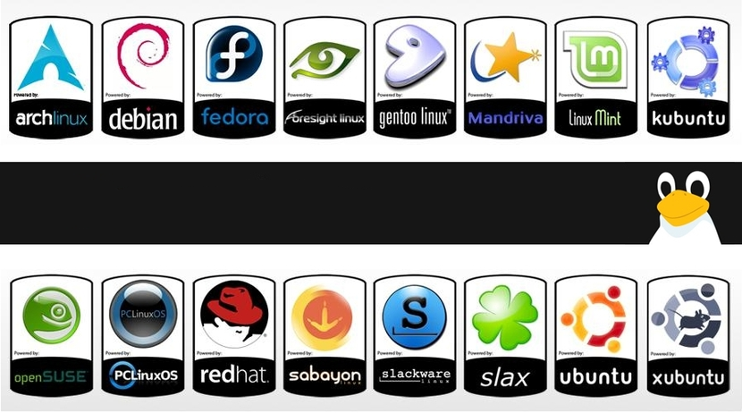
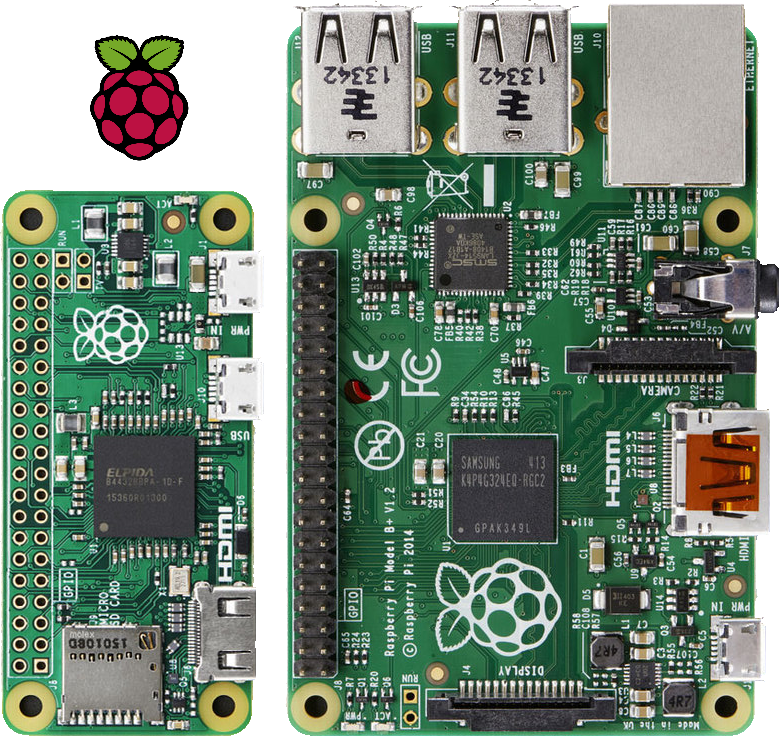
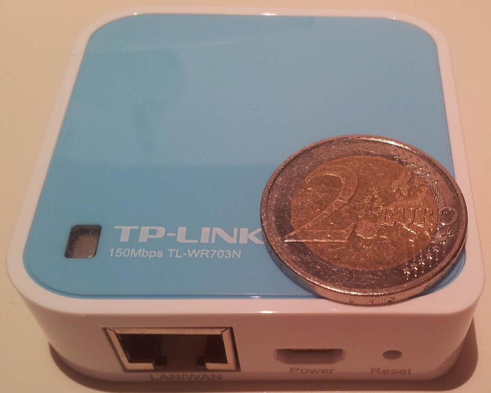

Linux
Created by @edme88 & rmarku
¿Qué es Linux?
Linux es un kernel de SO
Esta basado en UNIX, como otros sistemas operativos (MacOS, FreeBSD, Solaris, etc.)
¿Por qué Linux?
- Es código abierto,
- Configurable
- Developer Friendly
- Mejor Servidor
¿Por qué Linux?
- Dedicado a Redes
- Multi Plataforma
- Sigue Estandares
¿Que es una Distribución de Linux?
¿Qué Distro Elegir?
Para uso normal
- Kubuntu
- Mint
- Fedora o Suse
¿Qué Distro Elegir?
Para Trabajar
- RetHat
- Debian/Kubuntu/Ubuntu
¿Qué Distro Elegir?
Para PowerUsers!
- Gentoo
- Arch
- Debian
¿Qué Distro Elegir?
Para el Router de casa!
- OpenWRT
- DD-WRT
Linux Embebido
RPi
Linux Embebido
OpenWRT
